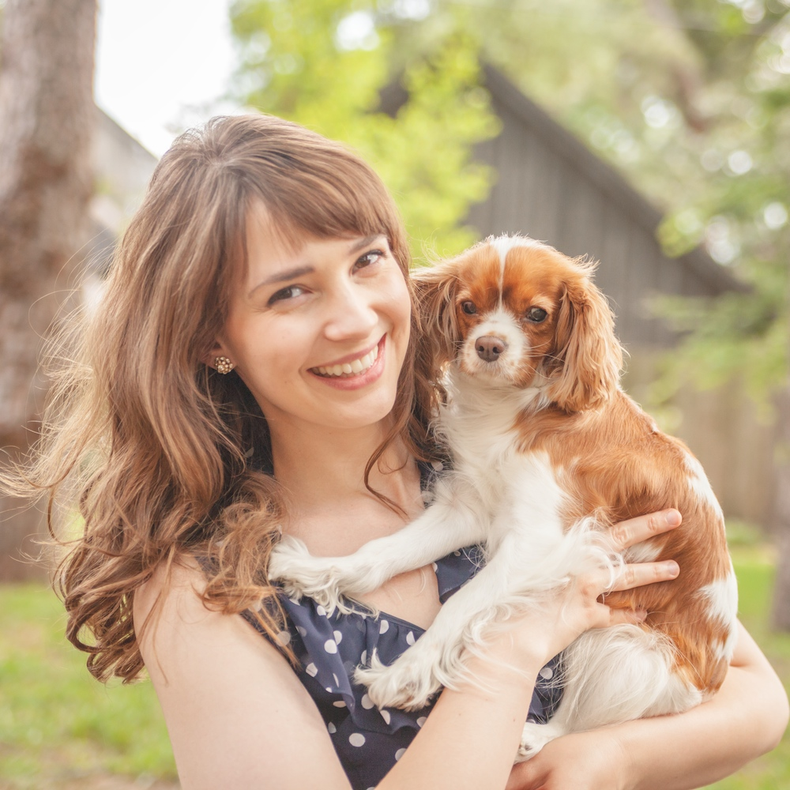

Hello and welcome!
I am Elissa Loring,
creator and artist of nest.
Thank you for stopping by my site! I am thrilled that you are here and hope you stick around for a while. My name is Elissa and I am a Houston based wedding photographer. I have a passion for people, love, light, natural surroundings and inner beauty – that’s why I love my job! It is truly an honor and privilege to help capture the love stories of so many inspirational couples through the art of exquisite photography.
I am a born and bred Houstonian and love my hometown. I live with my brilliant husband, Marius, and our two adorable spaniels, Bella and Sassy, the lights of my life. As a recent bride myself, I completely understand how important it is to capture all the wonderful moments and memories of your big day: be it the tear running down your father’s face when he sees you in your dress for the first time, the antique handkerchief embroidered by your grandmother that you cling to during the ceremony or the smiles of sheer bliss that you just can’t contain. I work tirelessly to make sure you feel confident in front of the camera and look radiant in your pictures. I am devoted to capturing moments as they naturally unfold, letting you enjoy your day without someone orchestrating your every move. From English manor houses to the open countryside, bustling cities or cathedral-like churches, I have photographed numerous weddings of all styles. I would be honored to have the responsibility of capturing all the memories from your wedding day and help you relive them for a lifetime.
I hope to meet you soon!